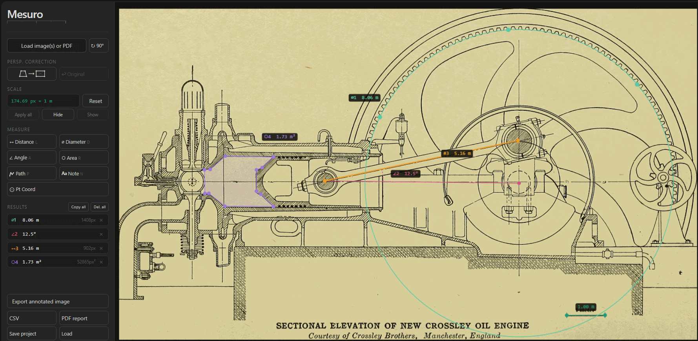

Load the drawing
Open an exported CAD view, technical image, or PDF page directly in the browser.
CAD drawing analysis
Use Mesuro for quick calibrated checks on exported CAD drawings, scanned technical drawings, or engineering diagrams: set scale from a known dimension, measure geometry, then export a clear annotated result.

Open an exported CAD view, technical image, or PDF page directly in the browser.
Calibrate from a labeled dimension, drawing scale, or other reliable reference.
Measure distances, angles, diameters, areas, paths, or coordinates.
Download a clear annotated image, PDF report, CSV file, or reusable project.
Yes. Open the exported drawing as an image or PDF, calibrate from a known dimension, and measure directly in the browser.
No. It is best for quick calibrated review, annotation, and export when you do not need to edit the original CAD model.
Yes. Mesuro supports distances, angles, areas, diameters, paths, and coordinates.